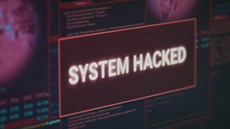

What is artificial intelligence?
Artificial intelligence (AI) can be described as 'Any computer system that can perform tasks usually requiring human intelligence. This could include visual perception, text generation, speech recognition or translation between languages.'
Artificial intelligence can be used in all areas of life, including cyber security. AI can monitor and analyse networks and computers in real-time as well as detect and respond to any threats it finds.
What are the cyber security risks in using AI?
Cyber criminals may use AI to:
- Easily create new malware that can contain new zero-day vulnerabilities or bypass detection.
- Create new, sophisticated, original, or targeted phishing attacks. Such actions can increase the number of scenarios, making it difficult for reputation engines to keep up.
- Analyse and collect data much quicker and help identify other avenues of attack.
- Create deepfakes (video or audio) that can be used to convince victims in social engineering attacks.
- Conduct attacks such as intrusions or generate new hacking tools.
And because AI relies on data sets that are often biased or incomplete, it can lead to missed threats and false positives, creating a false sense of security and leading to real-world consequences.
Samsung is among the first to ban its employees from using AI tools. This policy comes after an accidental leak of Samsung's sensitive information to ChatGPT just recently.
Positives
Faster Threat Detection and Response
Leveraging AI helps you better understand your networks and identify potential threats faster. AI-powered solutions can sift through vast amounts of data to identify abnormal behaviour and detect malicious activity, such as a new zero-day attack.
AI can also automate many security processes, such as patch management, making staying on top of your cyber security needs easier.
It can help you respond faster to attacks by automating specific tasks, such as rerouting traffic away from a vulnerable server or alerting your IT team to potential issues.
Improved Accuracy and Efficiency
AI-based cyber security systems provide improved accuracy and efficiency compared to traditional security solutions. For example, AI can scan scads of devices for potential vulnerabilities in a fraction of the time it would take human operators to do the same task.
Furthermore, AI algorithms can recognize patterns that may be difficult for the human eye to spot, leading to more accurate detection of malicious activity.
Greater Scalability and Cost Savings
AI can automate tedious security tasks, freeing valuable resources to focus on other business areas.
It can also process vast amounts of data quickly and accurately to identify threats faster than any human could. This helps reduce response times to security incidents and helps lower the cost of defending against cyber threats.
AI-driven tools can also help identify malicious activity by correlating different data points, allowing you to protect your systems proactively. These solutions are easily scalable, meaning you can obtain additional protection without significant hardware or personnel costs.